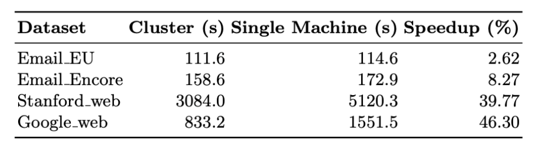

Community Detection with Distributed Computing
If you're interested in checking out the final implementation of this project, check it out on my Github.
When I went back to school I took a course called Systems for Massive Datasets. As a final project, I worked with some colleagues
to implement a community detection algorithm called CASS
on a distributed computing system. CASS is a community detection algorithm which is specifically designed to run on a distributed
computing cluster. One of the reasons I was attracted to this paper was my own experience using community detection to identify
patterns in seemingly unrelated IT tickets.
In graph theory, a graph is a network of vertices. When two vertices are connected, we say there is an edge. For example, each user
of a social media platform might be represented by a vertex, and a connection between two users is represented by an edge. We can
make graphs quite detailed by labeling the vertices and edges, or giving them weights, but in this post I’m going to be referring
to simple, undirected graphs. In this context, community detection is the problem of finding groups of vertices which share more edges
with each other than they do with vertices in other communities.
Unfortunately, the community detection problem doesn’t lend itself well to distributed computing. Software for distributed systems,
like Apache Spark and PySpark, spread large datasets across computing clusters with Resilient Distributed Datasets (RDDs). RDDs
spread massive datasets by splitting them into Partitions and sending partitions to individual compute nodes to execute a slice of
the required computations. Computations on Partitions can be a transformation or an action. Transformations are typically functions
for reshaping data, like a mapping or a filter. They’re important, but until you need to do some calculation it’s enough to just state
that the data will be transformed in this way. This saves the system making unnecessary calls to solid state memory, which incur a
communication cost every time they happen. Actions perform some calculation with the data, and are executed in the RAM of the compute
node the moment they’re called. All the transformations on each partition are stored in a flowchart called a Directed Acyclic Graph
(DAG). When a result is needed, the individual computations on each Partition can be unwound and combined together.
Distributed systems are fantastic, especially when each row is independent from all the other rows and features are identically
distributed across the whole dataset. With independent, identically distributed data (i.i.d data), each Partition is an independent,
representative sample of the whole dataset. But, in a community detection problem we are examining an edge list to find bunches of
vertices where edges are more dense. What would happen if the RDD partitioned the edge list right in the middle of a community of
vertices? Each compute node could identify a separate community, or worse, fold the split communities into a nearby community.
This would significantly reduce the accuracy of the results. This is a risk with other datasets where i.i.d doesn’t hold, like
non-stationary processes that evolve over time, or non-ergodic processes where different initial conditions cause systems to diverge
over time.
It’s because of this problem that many cutting edge community detection algorithms are designed to run on a single CPU. Even with an
exceptionally powerful chip, this isn’t scalable to the massive datasets which we observe in nature. CASS is interesting because it’s
intentionally designed to perform community detection in a distributed environment. It does this by calculating a similarity score
through two database style JOIN operations, and realizes optimizations through a Bloom Filter.

Computing clusters are not necessarily easy to acquire, especially on a student budget. While I procured an appropriate computing solution for this project, my colleagues built a prototype implementation designed to run in Google Colab. Google Colab makes it possible to access a single, high powered, CPU for prototyping. With both steps done, we believed it would be a simple task to run the implementation on the cluster I had set up in DataProc, which sits on top of Google Cloud Storage. The algorithm would be evaluated on four real-world graphs of increasing size, which were successfully processed in Google Colab on the prototype implementation.
On the distributed cluster the algorithm was great at processing small datasets. However, I found that the third dataset would experience a server connection error that crashed the notebook kernel. Knowing that this algorithm performed reasonably with a single machine, I decided to look for answers in the cluster diagnostics. I found them in the YARN memory manager, in the form of an Out of Memory (OOM) error.
The YARN memory manager is a feature of Apache Spark (and by extension PySpark) that prevents a calculation from exceeding the RAM of any individual node in the cluster. If the system tries to assign more data to a node than it can handle, YARN will shut down the system to avoid system failure. My diagnostics showed that allocated memory had risen sharply, and plateaued at the top, while CPU utilization followed a pattern of sharp peaks and valleys. In Apache Spark, this pattern indicates that the problematic bottleneck is in shuffling data around, rather than in complex calculations. This can be reduced somewhat by increasing the length of the timeout timer and reducing the size of partitions, but these optimizations don’t scale, and I still had an even larger dataset to process.
CASS finds communities through two JOIN operations. On each join, data from each Partition has to be shuffled around the network to find associated keys. This incurs a communication cost, which Apache Spark reduces by only executing transformations when an action is called. This is great in theory, but if the data being shuffled gets too large, or if a compute node fills up with internal data structures, then the node cannot receive a data packet, and the YARN memory manager will time out. In our prototype, everything happened on a single chip, with virtual partitioning. Data packets created by one partition of a single chip cannot exceed the memory of the whole chip, and so shuffling can’t crash the single node system, only slow it down. To get CASS to run on a distributed cluster, I would have to change how our implementation managed packets of data.
CASS already reduces unnecessary shuffling with a technique called shuffle selection, and a tool called a Bloom Filter. During JOIN’s, edges which share the same vertex are joined together. If a vertex has many edges, also called a high degree vertex, then many data packets from Partitions across the network have to be shuffled to meet at this compute node. Shuffle selection reduces this by orienting the JOIN to prioritize low degree vertices. Bloom Filters are a probabilistic structure which carries no risk of false negatives. However, each compute node needs its own copy of the Bloom Filter for each iteration of the algorithm, which takes up precious RAM. To avoid the OOM errors, I used
.unpersist() to discard unused filters and free up memory for new data packets.JOIN operations are a transformation in Apache Spark, which means that they are left unexecuted until the RDD is needed for some action. This greatly saves on the amount of memory needed across the system. But, it can create a bottleneck if a large RDD with an un-executed transformation is needed. To do the calculation, the compute node will need to first construct and store the RDD, which might fill up all the memory needed for the actual calculation. This can be prevented by caching, and then performing an action on, and RDD. To mitigate the trade off of computing an action just for the RDD to be available, I used a “for each value do nothing” style statement.
rdd.cache()rdd.foreach(lambda x: None)Modifying the prototype to work at scale may have had simple solutions, but it was an over many nights process. I’m big on sleep (it’s healthy!), but I found myself so invested in this project that I would catch myself checking the cluster diagnostics late at night, checking for crashes and making changes if necessary. I was learning a ton about distributed computing, and moving prototypes closer to a production environment.
A few days before the deadline, I woke up to a truly welcome surprise. After days of battling with the YARN memory manager, CASS had successfully worked its way through all four datasets. Even better, it had done so accurately. On smaller datasets, the processing speedup was negligible, but on the largest dataset, CASS had found communities 46% faster than on the single chip prototype. This result confirms that by designing methods with distributed environments in mind, it’s possible to efficiently and accurately perform tasks like community detection.
